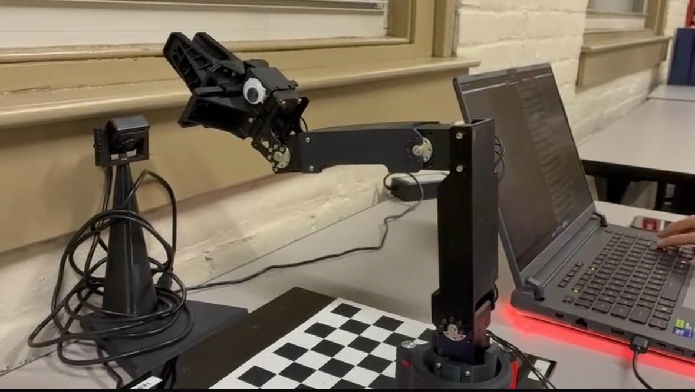
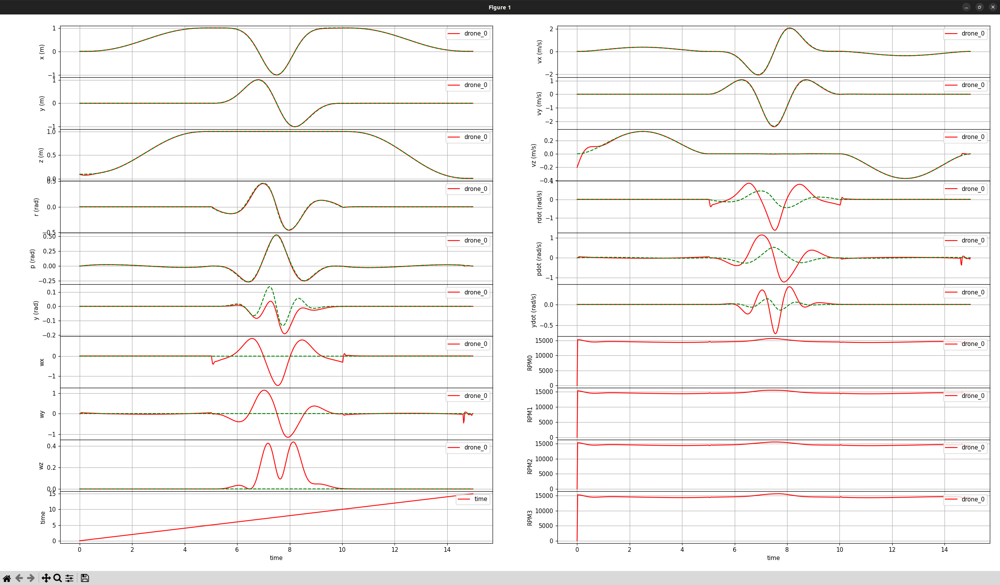
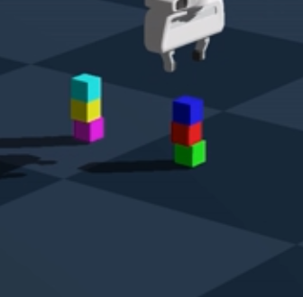
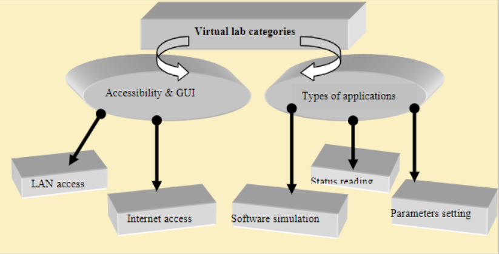
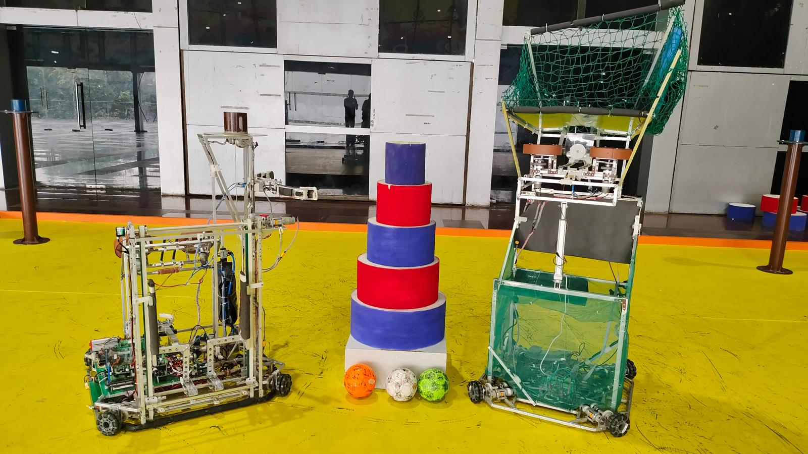
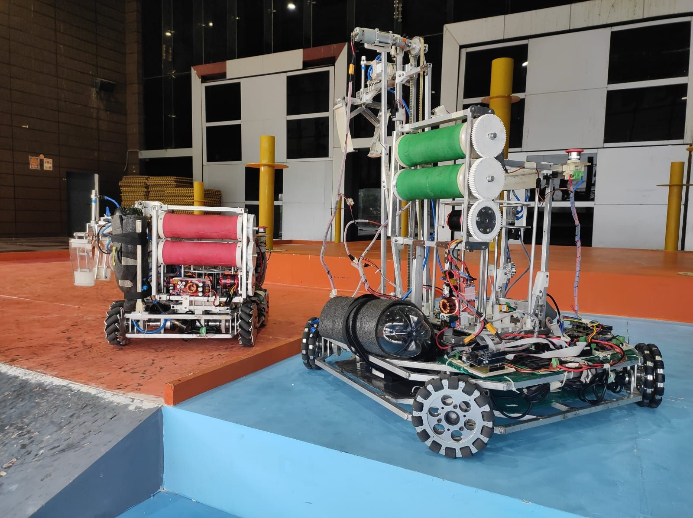

Embedded Systems
STM32, FreeRTOS, bootloaders, OTA updates, board bring-up, device drivers, BLE, UART, SPI, I2C, CAN.
Master’s Student • WPI • Robotics + Embedded Systems
I’m Anirudh Nallawar, a Mechatronics, Robotics, and Automation Engineering graduate student at Worcester Polytechnic Institute with prior industry experience in EV firmware, controls, robotics, and autonomous systems.
About
My background combines production embedded development with graduate-level robotics research. At BGAUSS Auto, I worked on firmware for an electric two-wheeler platform, from subsystem bring-up through bootloaders, BLE, and safety features. At WPI, I’m working on aerial controls and perception, motion planning, and vision-based sensing.
I’m especially interested in roles where firmware meets autonomy — the kind of work where robust software has to interact with real sensors, actuators, and dynamic systems.
Core Skills
STM32, FreeRTOS, bootloaders, OTA updates, board bring-up, device drivers, BLE, UART, SPI, I2C, CAN.
ROS 2, kinematics, motion planning, PD/PID/PI, LQR, INDI, trajectory generation, state machines.
Stereo vision, disparity mapping, depth estimation, point clouds, Gazebo, Genesis, OMPL.
C, C++, Python, MATLAB, Linux, Git, Docker, STM32CubeIDE, Keil, TouchGFX, Altium Designer.
Experience
Selected Projects

Built a full ROS 2 kinematics and control stack for a 4-DOF robotic arm, including FK, IK, Jacobian-based velocity kinematics, and Cartesian path control.

Designed PD and LQR-based control pipelines with polynomial trajectories, simulation analysis, and hardware-oriented evaluation of tracking performance.

Integrated PDDL-based task planning with OMPL motion planning and recovery logic for autonomous block manipulation in simulation.

Developed a web-based virtual lab for PIC microcontrollers covering clock setup, GPIO, PWM, and ADC experiments for embedded systems education.

Automated a 4-omniwheel drive system, designed a 3-DOF gripper arm, and contributed to custom PCB-based control hardware for a 35 kg semi-autonomous competition robot.
Watch project video ↗
Designed control algorithms and embedded firmware for two competition robots and helped lead the team to 5th place nationally.
Research & Publication
Implemented a self-balancing humanoid torso simulation featuring two 5-DOF arms mounted on a two-wheeled base. Built the simulation using ROS and Gazebo and developed PD control for balancing and motion control.
This work connects directly to the published paper on the robotic arm manipulator mounted on a self-balancing two-wheeled mobile robot.
Read reference ↗Education
Master’s in Mechatronics, Robotics and Automation Engineering
Relevant Coursework: Foundations of Robotics, Robot Control, Motion Planning, Robot Dynamics, Computer Vision
Expected May 2027B.Tech in Instrumentation & Control Engineering · Minor in Computer Science
Relevant Coursework: Control System Design, Electronics and Embedded Systems, Robotics and Automation
May 2023Beyond Engineering
Outside engineering, I enjoy photography — especially capturing moments from travel, campus life, robotics events, and everyday scenes that feel visually interesting.
It gives me a different way to think about composition, detail, motion, and observation — the same instincts that often show up in robotics and perception work.
I usually gravitate toward sci-fi and thriller stories — the kind with strong world-building, tension, and clever ideas.
Favorites include Interstellar, Inception, Blade Runner 2049, The Dark Knight, Dune, Dark, Black Mirror, Breaking Bad, True Detective, and Stranger Things.
I enjoy gaming as a way to unwind, and Rocket League is the one I play the most.
A fresh set of 15 photos is chosen each time the page loads.
Contact
I’m currently looking for internship opportunities in embedded software, robotics software, controls, and autonomous systems.